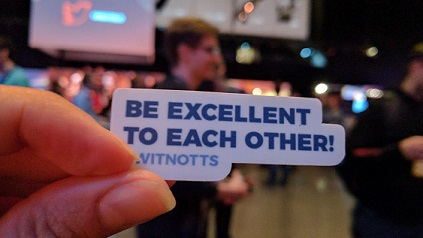
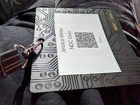
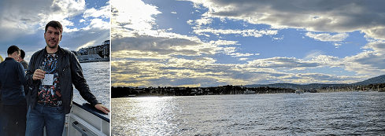
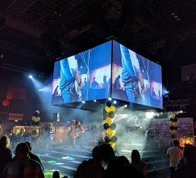

NDC Oslo 2017
A summary of my time as a volunteer at NDC Oslo 2017

How it began
After having a brilliant time volunteering at NDC London earlier this year (blog post here) I snatched the chance to volunteer at Oslo. Moreton and I booked our flights and hotel, packed our bags and headed to Norway.
We woke at 3am and after travelling on many trains, planes and automobiles, finally arrived in Oslo, the birth place of NDC. After a quick snack it was time to find out more about what being a volunteer would involve.

After a tour of the venue (which was GIGANTIC compared to London), we were put to work: unpacking lanyards and hoodies ready for the following day. There were a few familiar faces that were good to catch up with and we met a few people we would become friends with over the following days. After working up a sweat, and collecting our badges, we all went home for some well earned sleep .
First Day
7.45am all the volunteers gathered for the very first day of the conference. Moreton and I were on badge duty - he scanned tickets & I passed out the printed badge labels. It was great fun seeing a mixture of excited and jet lagged faces entering the conference. Though we had some technical difficulties, we were done with plenty of time to see the Keynote by Dylan Beattie.
Walking in to I Want My NDC , feeling the buzz from the attendees, it was hard not to get excited. Dylan is a fantastic speaker if you want to both laugh and cogitate. He was a fantastic choice for Keynote and did not disappoint.
I was working Room 1 the morning of the first day. The first talk was Building a Serverless, EventSourced Slack clone by Andy Davies and the second Serilog: Instrumentation that Works for You by Nicholas Blumhardt.
I’m a big fan of Serilog and of Nicholas’ blog. At work I’ve been working on a centralised logging project using Serilog and Elastic Stack. As such I was thrilled to see him speak, and was not let down. It was very lucky that I got assigned that room as my first one of NDC.
The afternoon I was off duty and chose to watch Data magic with the Elastic stack! by Aleksander Stensby, Building Resilient Applications In Microsoft Azure by Scott Allen, Getting real(time) with Akka.NET, React and Redux by Francis Paulin and Life, Liberty and the Pursuit of APIness : The Secret to Happy Code by Dylan Beattie
After Nicholas’, Aleksander’s and Dylan’s talks I was buzzing about monitoring & the power of Elastic. I was ready to get back into the swing of my work and it re-lit the fire of this particular passion. It has been a fantastic first day, and what’s a better way to top it of than with a boat cruise.
Boat Cruise
In the beautiful sunshine, ~200 NDC attendees boarded on two boats to enjoy a shrimp feast, each others company and the view.

If you go to NDC, do the cruise. We had an amazing time. I laughed so much my sides ached (I’m blaming Todd for a lot of that).
Second Day
For the second day, I had the afternoon shift. After a little lie in to get over the lack of sleep from travelling. First of all we went to see Scaling Docker Containers using Kubernetes and Azure Container Service by Ben Hall. I use Docker at work, and Moreton wanted to learn more. Ben Hall is an excellent speaker when you want to learn about Docker.
After this we went to watch “Doing Devops” as a politically powerless developer by Damian Brady. This is enlightening if you want to know how to more about convincing your company / helping your team to work in a devops way.
In the afternoon, I was the volunteer for Room 1. One of the great things about volunteering is that you see talks you wouldn’t have necessarily seen. In the case of that particular afternoon I saw Keeping the Noisy Neighbors Happy by Eran Stiler which is a talk on multi-tenancy - a subject I knew nothing about. This was followed by It’s NDC - But Not As We Know It - an entertaining and educational panel discussion for the masses. Finally I saw The Web lands in the Virtual and Mixed Realities by Maximiliano Firtman which was a great overview of current VR technologies. This is again another area I know little about.
Party
This year was the 10th Anniversary of NDC Oslo, and the party was worthy of it. First came out a cake large enough to feed all the attendees. In other words - bloody big cake. There was plenty of food and drink dotted around the main arena including the beer brewed by Ben. I personally went for meat and cheese, including my very first taste of elk.
The first piece of organised entertainment were the failure tales. Some of the speakers presented times when they really thought they had fecked up, or a time of a mistake. All the stories were entertaining, and some had educational points. I love this part of the NDC party as these people who have spoken with such great authority and gained our awe, suddenly appear very human. It’s good to remember that nobody is perfect even if they can live demo flawlessly.
Then you had the option of taking part in the pub quiz. I watched from afar with my other half this time. We tried to answer by ourselves but soon realised the quiz was for the big leagues. Its bloomin’ hard!

To close the party, a local band called Love Shack performed. They cover 80’s songs and it was a lot of fun head-banging to Metallica, screeching to ACDC and acting like an idiot to Cyndi Lauper. As the final song played, we snuck off tired & happy.
Last Day
Honestly, the final day of NDC was a tad slow for me. We had met one of the speakers, Martin, on the boat cruise previously. He’s a genuine and lovely guy so both Moreton and I decided to go see him speak. Very glad we did. His talk Sensors, data and dashboards: Azure IoT end-to-end by Martin Abbott was brilliant and gave a superb overview of using IoT with Azure, even though the demo gods didn’t listen to his prayers. Oh cruel demo gods!
The rest of the morning I decided to do some work on a project I currently have on the go. My hands were itching to get back on a keyboard and I was booked in to volunteer for the afternoon.
Again there was some variety with the talks in the room I was covering. The first was ReST 3.0 – A lap around HTTP Apis’ next generation by Sebastien Lambla which was useful to my day to day. This was followed by FAKE + Paket – PowerTools for .NET developers by Steffen Forkmann and Web APIs at the Type Level by Erlend Hamberg. Both were very new topics to me.
With the venue having mostly wrapped up, the volunteers were asked to help pack some of the stuff away. Happy to oblige, we collected voting cards and boxes, carried barrels and trees, packed away table cloths and cats, along with a few other things.
After such hard work, all of us needed a well deserved drink - so off to Pubconf we went!
PubConf
Disclaimer - I have only been to 2 NDC’s now BUT PubConf is probably my favourite part of the full 3 days.
This was Moreton’s very first Pubconf, and the poor boy had to put up with me buzzing about it since NDC London. I was a little concerned I had over-hyped it, but even he agrees it’s brilliant. It was better than he expected.
I’m not going to break the second rule of Pubconf too much (What Happens At Pubconf Stays At Pubconf, the first being Don’t Be An Asshole). If you go to NDC anywhere GO TO PUBCONF.
You’ll laugh. You’ll drink beer to help your dry throat.
You’ll cry (from more laughter). You’ll drink beer to rehydrate.
You’ll sing. You’ll drink beer to help you reach that high note.
You’ll talk to amazing people. You’ll drink beer for fuel.
You’ll drink beer.
Todd is King of Pubconf and for that - he is king.
To Finish
NDC Oslo did not disappoint. Both Moreton and I are already making plans to be at NDC London next year. We met great people, learnt new things and created memories. If you get the chance to go to any of the NDC’s as an attendee or as a volunteer - DO IT.
Thank you to all of you who made our NDC Oslo fantastic. There are too many to name but you all know who you are.
Special shout out to Jackob, Charlotte and Kjersti for letting us be involved / volunteer at your amazing event. Especially Kjersti - without you, we still wouldn’t know how to eat shrimp.